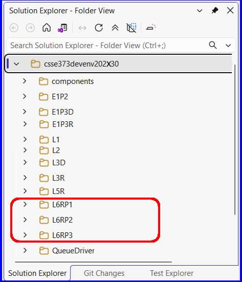

Layering an Operation
1. Setup
1.1 Get the L6RStarter Download
- Download L6Starter.zip to your machine - to be used in subsequent steps
1.2 Copy the 3 projects from L6Starter.zip
- Inside L6Starter.zip are 3 VS2026 Test projects named:
- L6RP1
- L6RP2
- L6RP3
- P1 stands for Part 1, P2 stands for Part 2, P3 stands for Part 3
- Copy these 3 projects into your: csse373devenv202x30-yourID folder
1.3 About the L6RPx Projects
- L6RP1 - is a unit test project for RemoveLastCapability. This capability is layered on top of the Queue component, is already implemented and can be
found in your components/Queue folder. You will be using this capability as a model for how to implement the capabilities in L6RP2 and L6RP3.
- L6RP2 - is a unit test project for InjectCapability. Your task will be to implement this capability, by layering it on top of
the Queue component. Your implementation must pass the provided tests in L6RP2.cpp.
- L6RP3 - is a unit test project for FindLocOfXCapability. Your task will be to implement this capability, by layering it on top of
the Queue component. Your implementation must pass the provided tests in L6RP3.cpp.
|

|
2. L6 Statement of Work
2.1 Primary Objectives
The primary objective of this lab is to provide you experience working with:
- Layering an operation (e.g., InjectCapability) on another already existing component (e.g., Queue)
Because these capabilities (enhancements to Queue) are layered, they will work with any Queue implementation that implements QueueKernel, i.e., Queue0, Queue1, etc.
- Adding new functionality to an already existing component
- The inheritance syntax used by C++ when layering a new operation
- C++ syntax used by the client program when adding additional capabilities to an already existing component
The approach used in L6 is a form of decorator pattern where the decoration occurs through template instantiation done at compile time
2.2 Specifics
Steps:
- Start Visual Studio
- Start with L6RP1, read and follow the instructions in the file L6RP1.cpp, there is a "to do" list near the top of the file
- Then complete L6RP2's "to do" list, found in L6RP2.cpp
- Finally complete L6RP3's "to do" list, found in L6RP3.cpp
Software Engineering Requirements:
- Use Design by Contract - No defensive programming for any of these operations
- Write elegant client code - Eliminate code duplication, have no unused variables, leverage Queue's public operations, etc.
- About Making Copies - There should be no reason to make copies of any Queue or variable of type T, so don't
3. Testing
- L6 testing
- The provided tests (in each of the L6RPx project's .cpp files) are minimal
- Each .cpp has a comment recommending additional tests in order to do a more thorough job of testing you implementations
The Grader's test cases:
Grading will be done running a more complete set of unit tests which will systematically stress your implementations of InjectCapability, FindLocOfXCapability, and EqualCapability
4. Submitting the Assignment for Grading
- Follow VS2026 instructions for committing and pushing your L6R project to your GitHub Education CSSE373 repo
- Use the commit message "L6R final commit, ready for grading"